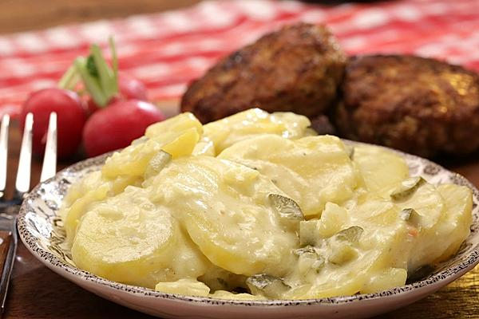

Kartoffelsalat

Beschreibung
gesamtdeutscher Kartoffelsalat, weil wenig Mayo und auch Brühe vorhanden sind.
Zutaten für 6 Portionen
- 2kg Kartoffeln, festkochend
- 1 mittelgroße Zwiebel, feinst gewürfelt
- 250ml Gemüsebrühe oder Geflügelbrühe
- 3 EL Weißweinessig, milder, z.B. Marc de Champagner Essig
- 2 EL Dijonsenf, mit grünem Pfeffer
- 200g Mayonnaise, selbstgemacht oder wirklich gutes Fertigprodukt
- 6 kleine Gewürzgurken, fein geschnitten
- etwas Gurkenflüssigkeit
Zubereitung
Gesamtzeit laut Rezept: ca. 3 Stunden
- Die Kartoffeln als Pellkartoffeln mit etwas Salz kochen, abgießen und pellen. Erkalten lassen und dann in dünne Scheiben schneiden, nicht hobeln, sonst werden die Scheiben zu dünn.
- Brühe aufkochen lassen und die fein gehackte Zwiebel etwa 2 - 3 Minuten darin kochen lassen, den Essig dazu geben. Von Herd nehmen und abkühlen lassen. Den Senf dann einschlagen. Die Brühe-Zwiebelmischung über die Kartoffelscheiben geben, unterrühren und etwas ziehen lassen. Die Gewürzgurken in kleine Würfel schneiden und auf die Masse geben. Die Mayo mit dem Gewürzgurkenwasser aufrühren und über den Salat geben, vorsichtig unterheben und ziehen lassen.
- Dies ist ein Grundrezept. Im Sommer mach ich das gerne mit getrockneten und dann eingelegten Tomaten,in Stückchen geschnitten), fein geschnittener Frühlingszwiebel, Radieschenscheiben oder auch Olivenstückchen. Geht auch prima mit Steak- oder Bratenresten, frischen Kräutern oder auch quer durch den Kühlschrank - etwas Paprika, Tomate, Gurkenstücke etc..
-
Meine Fußballer mögen den einfach nur so zum Braten oder Schnitzel, aber der Salat lädt zum "Spielen" ein.